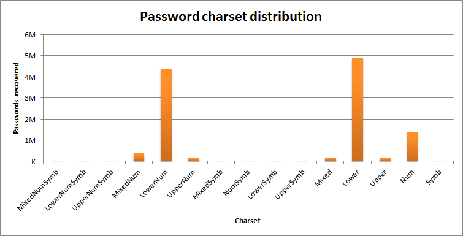

Forces et faiblesses des mots de passe
mail de jean.dupond@gmail.com
> Chers Amis à l'aide ! Je suis en Grèce et on m'a volé mon portefeuille. Je n'ai plus d'argent.
> Pourriez-vous m'envoyer un mandat de 100 euros afin de m'aider à revenir en France en utilisant le service suivant [URL] \\
*Signé : votre ami Jean Dupond que vous connaissez bien et avec lequel vous correspondez souvent.*
Comment est-ce possible ?
La messagerie de Jean Dupond a été piratée
Jean Dupond (et vous désormais) savez que les identifiants de sa messagerie ont été dérobés
Qu'en est-il du vôtre ?
Utilisez le service haveibeenpwnedpour le savoir
Vos identifiants vous ont été volés !
Qu'est-ce qui a été dérobé ?
l'identifiant mail : celine.michu35@hotmail
le nom d'utilisateur : cmichu35
le hash (=condensat) du mot de passe : 31b664d29297362b01850c08e52be7183e6832ca
le nom du protocole de hachage (SHA 1)
Est-ce grave, docteur ?
Comme pour Jean Dupond, les attaquants vont essayer de casser le mot de passe
S'ils y réussissent, ils vont essayer d'ouvrir d'autres services populaires avec le même mot de passe et le même nom d'utilisateur (cmichu35)
Pourquoi ?
Parce que la plupart des gens utilisent le même mot de passe pour une grande quantité de services en ligne
Mais comment retrouver un mot de passe derrière cette série de caractères ?
En cherchant des hashs équivalents dans des listes de mots de passe fuités
En utilisant la force de calcul à sa disposition
En combinant la force de calcul et les statistiques d'usage dans la création de mots de passe
Attaque par dictionnaire
```
123456
12345
123456789
password
iloveyou
princess
1234567
rockyou
12345678
abc123
nicole
daniel
babygirl
monkey
lovely
jessica
654321
michael
ashley
qwerty
```
Dictionnaire : liste de mots de passe récupérés sur le web
On utilise un logiciel pour comparer le hash dont on dispose avec le hash de l'ensemble des mots de passe...
jusqu'à tomber sur la bonne corrélation
31b664d29297362b01850c08e52be7183e6832ca:loverforever
Cela ne prend que quelques secondes si le mot de passe recherché est dans un dictionnaire utilisé
Attaque par force brute
un dé : 1/6, un chiffre : 1/9, une lettre : 1/26, un chiffre, une lettre ou un caractère spécial : 1/55
6 chiffres ou lettres : 6^35 = 1838265625 possibilités
Avec une puissance de calcul de 1000 requêtes par secondes, le mot de passe peut être craqué en 510 heures
En utilisant le processeur et la carte graphique, on peut atteindre 49 000 hashs testés par seconde (=10 heures)
Pour l'attaquant, le but va être d'augmenter la puissance de calcul ($$) mais aussi d'utiliser des masques
Masque : structures observées le plus souvent dans les mots de passe
Mutations : le 0 à la place du O, le $ à la place du S : Pa$$w0rd

Ce qu'il faut pour éviter les ennuis :
Des mots de passe forts
Des mots de passe nombreux (un par service)
Un gestionnaire de mots de passe
Faut-il changer de mot de passe souvent ?
Choisir son gestionnaire de mots de passe
local ou dans les nuages ?
Libre ou propriétaire ?
Exemple : Clipperz
Merci pour votre attention
Des questions ?
damien.belveze@univ-rennes1.fr